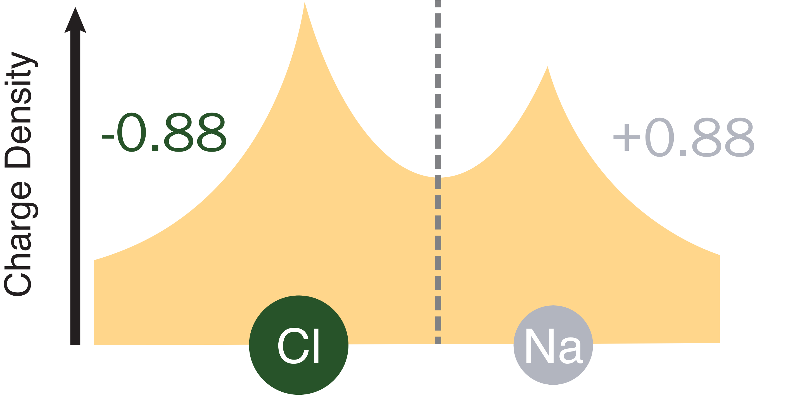
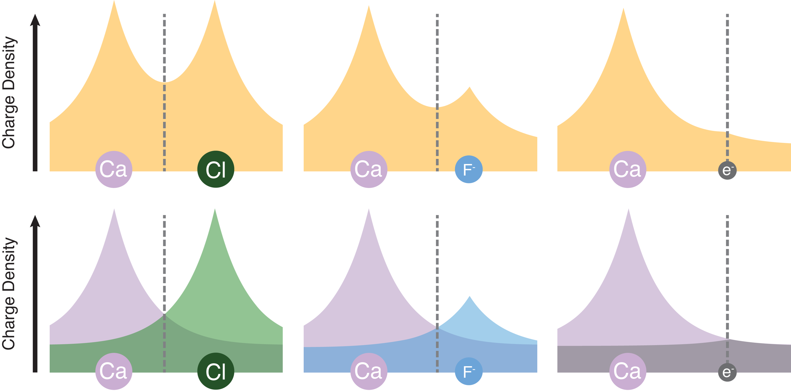
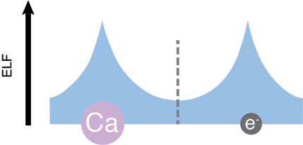
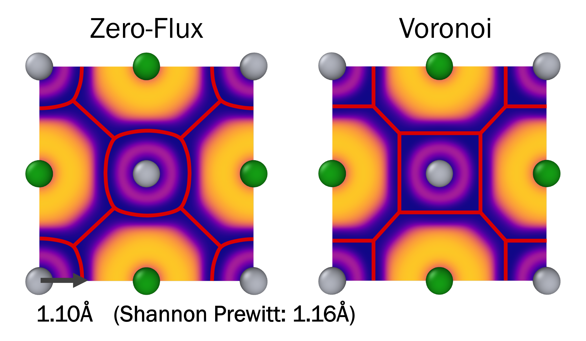

Calculating Charge with the ELF¶
BadELF in Ionic Systems¶
Oxidation states play a major role in our understanding chemistry. Correspondingly, many methods of calculating charge from first-principles calculations have been developed. Perhaps the most common method comes from Bader's Quantum Theory of Atoms in Molecules.
The method defines regions of space that belong to each atom in the system using the charge density. Barriers are defined by a zero-flux surface surrounding each atom. The zero-flux surface can be thought of as a 3D equivalent to the minimum of a line. Each atom's region can then be integrated over to calculate a charge, and compared to the neutral atom to get an oxidation state.

This method has been shown to be quite effective for most standard systems. For electride systems, however, it tends to fail. This is due to the relatively small charge on each bare electride electron (~1-2 e-) which results in a bias of the zero-flux surface towards the bare electron and a small or zero charge assignment:

To correct for this, it would be ideal to have a function similar to the charge density with high values at both the bare electron sites and nearby atoms. Luckily, this function exists in the form of the Electron Localization Function (ELF) developed by Becke and Edgecomb. The ELF is a measure of how much each wave function contributes to the kinetic energy density. It approaches 1 when only one wave function significantly contributes and 0 when many contribute. Importantly, it approaches 1 for highly localized electrons such as those found in covalent bonds or electride electrons. This allows one to define zero-flux surfaces using the ELF, then integrate resulting volume in the charge-density:

The result is a more useful depiction of charge on the bare electrons. Though the use of this method for electrides has only been recognized recently, the idea of calculating charge with zero-flux surfaces in the ELF dates back nearly to the functions conception.
Despite the usefullnes of the zero-flux partitioning of the ELF there is one unfortunate downside over traditional Bader analysis. Partitioning in this way results in atom oxidation states very near integer values. For example, application to NaCl results in oxidation states of +0.97/-0.97. While this nearly match our natural expectation of +1/-1, Bader analysis gives values around +0.88/-0.88. This turns out to be much more useful, as it implies a degree of covalency in the system. Ideally, we could recover these expected values.
Investigating the ELF around the zero-flux surface indicate a cause of this problem. Anionic atoms tend to have higher ELF values, resulting in all of the interstitial space being assigned to them, and oddly shaped convex volumes. To account for this, we can use voronoi-like planes to separate atoms at minima rather than the zero-flux surface:

The use of these planes is justified by the nearly spherical shape of the atoms with radii nearly matching those of shannon and prewitt. Ideally, this method could also be used for the bare electrons which likely also experience some bias in the interstital space. However, electride electrons are often extremely non-spherical, resulting in unreasonable plane placements and oxidation states. As a result, we have chosen to use a hybrid method of partitioning, with bare electrons separated using a zero-flux surface and atoms separated with planes.
It is this hybrid method that makes BadELF a unique algorithm, providing reasonable charges for bare electrons while still providing a sense of covalency for the atoms in ionic materials. Ultimately, the choice of partitioning is still up to the user and we provide the ability to use a more traditional Bader-like analyses or a plane-only partitioning scheme (See the algorithm parameter.
BadELF in Covalent/Metallic Systems¶
BadELF was originally created with only highly ionic electrides in mind. For electrides with considerable covalent or metallic character, there will be maxima throughout the system corresponding to covalent bonds and metallic features. Typically this results in maxima along the atomic bonds which conflict with the planes used to separate atoms at minima in ionic structures.
There are several ways one might choose to handle these features. For example, one could choose to place planes at the maximum along bonds instead of the minima, retaining a hybrid separation similar to BadELF. A more traditional method is to treat these features as separate entities, similar to our treatment of bare electrons. The number of electrons found in the bonds can be related to bond order and gives a measure of bonding strength See Silvi and Savin. Given this, we recommend using the zero-flux surface algorithm and analyzing these features individually.
BadELF with Spin Polarized calculations¶
The original BadELF algorithm assumed a closed system where the spin-up and spin-down ELF and charge density are identical. However, in many cases, such as the ferromagnetic electride Y2C, this assumption does not hold. In these cases, the ELF values of the bare electrons can vary considerably, and in extreme cases they may localize to different sites. To handle this, BadELF can be run separately to obtain the charges on atoms and bare electrons in each spin system and the charges can be combined in post. We typically recommend treating electride systems this way even if differences in the spin-up and spin-down systems are small.
Automatic Finding Electrides¶
To use BadELF, the algorithm first needs to know that the system contains bare electrons and where these electrons are localized to. BadELF uses a "dummy" atom system in which the input structure is labeled with fake atoms representing the location of bare electrons. While these can be placed manually, this can be quite inconvenient and requires prior knowledge that the system is an electride.
To assist with this issue, we developed an algorithm that automatically finds features in the ELF that correspond to atoms, covalent bonds, metals, and bare electride electrons. This allows for each of these features to be analyzed and treated separately. Because the scope of this method is not limited only to electrides, in principal it can also be used to assist in more traditional ELF topology analysis. For more theory behind this method and its use, see the ElfAnalyzerToolkit class